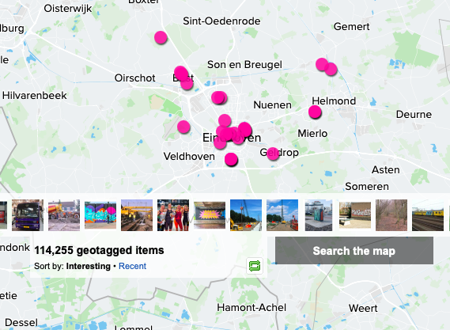
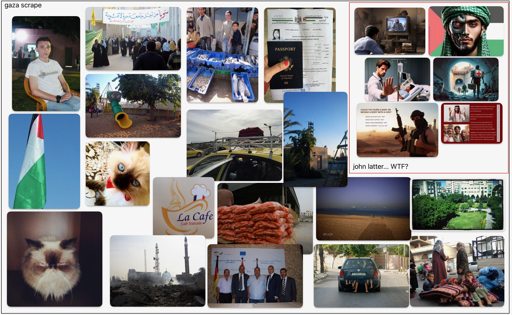
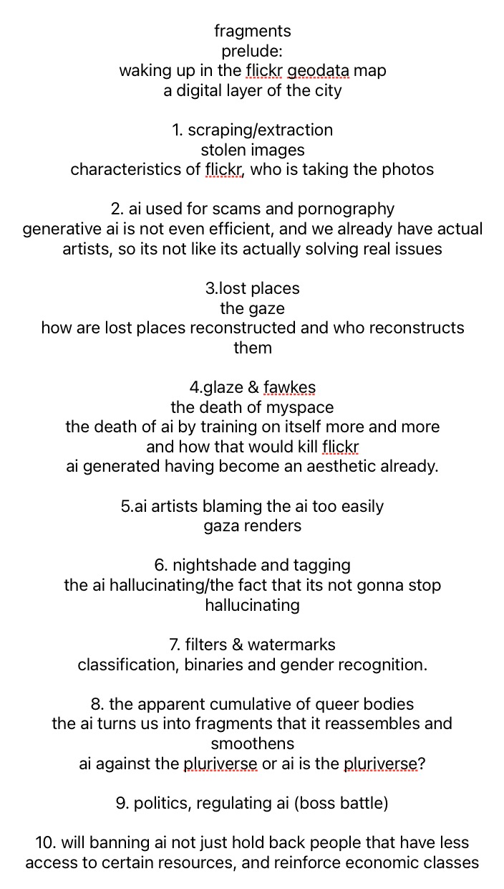
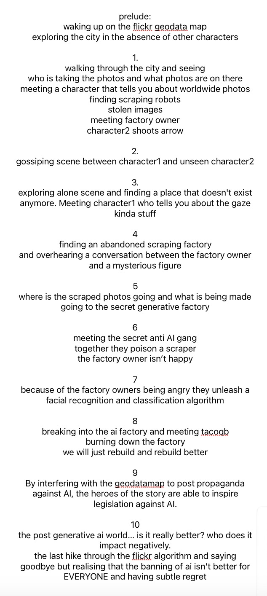
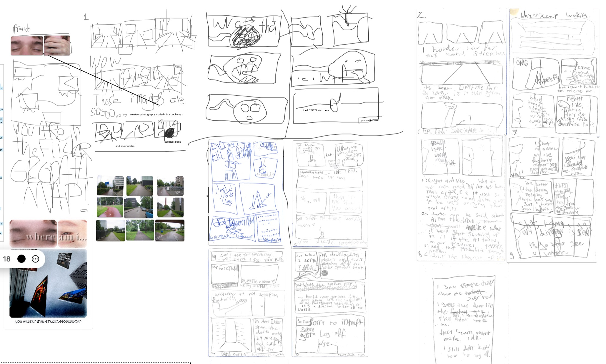
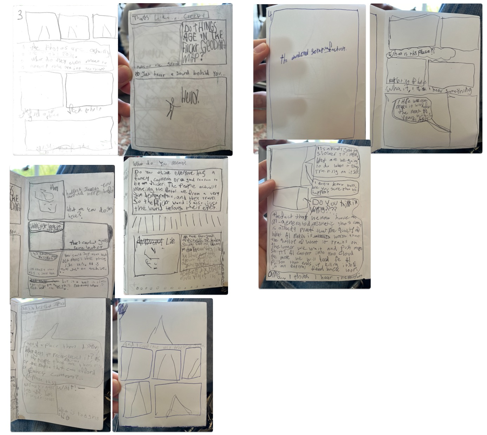
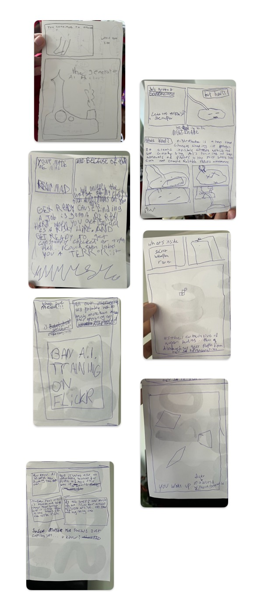
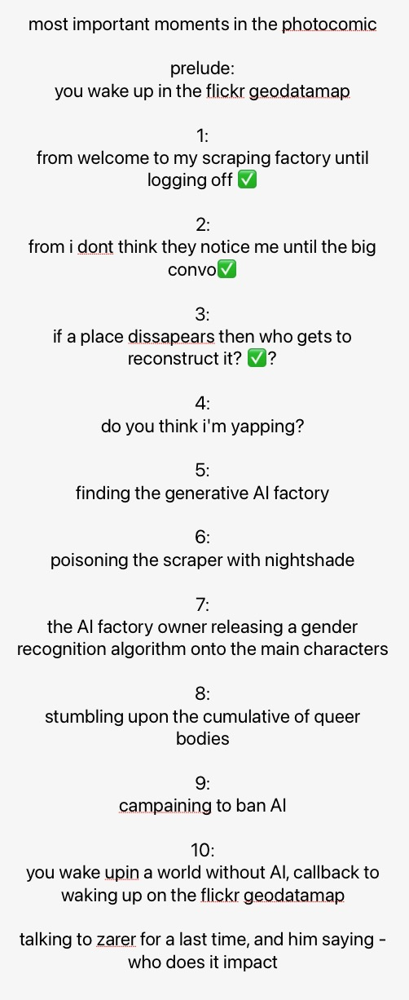

This website will look a little bit messy, the theme of the website is early 2000s/2010s webblog, to reflect the aesthetics of Flickr.
If it is annoying you, I recommend to turn on reader mode on your Iphone or Mac, although it might not work with Flickr embed images.
I am using many photos from Flickr on this page, these are clickable, to be transparent about the source.
LET's GET STARTED ☀Starting research after end term: Archive.org and Flickr
My process after the midterm started with me feeling a bit lost on what steps to take next, and with that starting to look into digital archives. I also felt that I wanted to do something less serious, and more fun. I began with looking into the Internet Archive, or Archive.org. I was really fascinated with their actions, specifically the bookmobile and their way of working with scraping to archive web spaces.

I ended up feeling like archive.org was too established as a political and conceptual space for me to really find something new and interesting about, which is when I moved on to one of my favorite websites for finding cool old photos, ☁Flickr!.☁
Personally, I use Flickr a lot to find photos that inspire me. Pinterest really algorithmically spoon-feeds you images and defines your aesthetic for you, however Flickr doesn't have any recommendation algorithms, and usually to find nice photos, I will just go through many people's profiles, their favorites, and their friends, in order to find new photos to add to my favorites. Speaking of, here are my favorites:

♬ the GEODATA map ♬
One CRAZY thing that I was always aware of on Flickr, but never really gave much thought, is the Flickr Geodata map. Basically, it is an entire world map, with all the Flickr photos on it that have a geolocation marked. If you look up Eindhoven, it says there is over 100k photos there. There are only 223k people here! Maybe one day we will have more photos on the geodatamap in Eindhoven, than people.
I found it quite beautiful in a way, that there is such a vast digital layer of the city existing for the few people that still use Flickr to see. You can go basically anywhere in the world and find photos. However, it became clear to me rather fast that most of the pictures are taken by a slim demographic of people. This is especially clear exploring the rest of the world, and seeing many places in the global south through the eyes of mostly people with European/White American last names.
One defining moment in my research was looking through the Geodata map in Gaza. I felt very conflicted before trying this, as I didn't know what I would find. Anyway, what I found was that there are very many pictures taken by humanitarian aid workers. There were also many photos taken by people I assume are from Gaza, that are documenting daily life. For the rest there are some photos of cats, and also many photos by an account called John Latter, which would post very obviously AI generated photos that spread sourceless claims about things that Hamas supposedly has done. It was clear that there is some sort of mini conflict on Flickr that mirrors the real life situation, as a sort of hybrid phenomenon.
While this was super interesting to me, I really felt like it wouldn't be a smart idea to do a project about Gaza as of now, as I didn't feel like it would be good for me to stare at the horrifying images coming out of Gaza daily, and I needed some distance.
scraping & Qgis
Scraping is downloading big amounts of data from the internet in an automated way, it is most commonly done to train AI, or for scientific research.
I mentioned scraping at the beginning of this research web hub, because Archive.org often uses scraping to archive web pages and communities. There are many groups of people currently working with Archive.org to create accessible archives, like for example SUCHO, which archives Ukrainian websites to prevent them from going down as a result of the Russian invasion.
It seemed to me, like a good next step in my process, was to try to scrape the Flickr geodata map. I was able to run a scraping algorithm by a user called antiboredom that uses python, which I downloaded from github. This scraping algorithm was useful, but it didn't give me the option to download images only based on coordinates. However, I was able to modify the code using ChatGPT to scrape with only coordinates, no search term required. I also was able to make it so that it would only give me image URLs and no images anymore. To view the images, I worked with ChatGPT to create a tool that would let me upload the JSON file generated by the scraping algorithm in order to view all the images and where they were taken, as well as search for the closest image to a certain coordinate. The only thing is that it can get a little messy with big data sets. You can view the tool here! And here you can download a json file that you can upload there (open and press command + s)
Also, having this big data set, I experimented with QGIS to create maps of images. The first one I tried was for a friend, who is doing a big research project about the lost queer history of Bugis street in Singapore. Therefore that is the location that these maps center. This was my first time using QGIS.

⟢⟢⟢ Flickr ⟡ & ⟡ AI training ⟣⟣⟣
Doing these experiments were very fun, but at the same time, felt very extractive. I am usually very critical of things like AI, so why would I replicate a part of its process. At this point, I decided that it would be better to create something to exist inside of Flickr, so that it is giving back to the Flickr community, instead of extracting and operationalising other peoples art.
I also realised that Flickr would be an extremely easy source for AI to train on, and is probably already being trained on by many of the big AIs out there, as its API gave me access to millions of copyrighted images that I could just download, no questions asked.
One source confirmed IBM has used Flickr for AI photo training. They were however only using Creative Commons and public domain licensed images. This however also raises questions, as these licenses were created before AI training was really as big of a thing, so are these licenses really consenting to this, or is it just an oversight in the law? Creative Commons often comes out with new versions of it's license to better protect the users, however, most Flickr photos are still using older versions of the licenses.
what can I do against AI training
I can say a lot in this section, however, I think it is easier if I refer you to my home guide for AI training, which I wrote to have at end terms.
allllll my criticisms of AI + case studies, in a row
I have a long list of criticisms of generative AI, here is that list, followed by 2 case studies of AI being EVIL:
1. AI is used for scams and it is used to make non-consensual pornography.
2. AI trains on images that it usually doesn't have permission to use.
3. AI recreates/reinforces biases in society that it gets in it's training data.
4. Because AI is black box, when AI says something problematic, it is often just seen as a silly mistake, instead of something that should be traced back in the training data.
5. People have TOO MUCH TRUST in AI's accuracy.
6. Generative AI is literally unnecessary, because we have real artists, so why would we need AI ones? Isn't the whole point of art to reflect on the human experience, and how is AI gonna reflect on something that it has never had. Also instead of paying artists, we are now paying for electricity costs of datacenters that store stolen images for the AI to train for??? just crazy...
7. AI is used to classify people, however do people really need to be classified? 8% of straight cis men get wrongly classified in a standard gender recognition algorithm, while 25% of women and lgbtq+ get wrongly classified.
8. AI is such a vast body of knowledge, but literally can not tell you the author... so you will never get much more than face value.
9. When we are normally on the internet, we can deduct if an image is super biased from what website it is on, and what else is on that website, or maybe we already know the website. It is quite easy to be media literate, and see bias, however AI can bring you this same information, without you doubting it.
♛ making a photocomic ♛
Thinking about what to make for my intervention on the Flickr geodatamap, the idea of making a photocomic came into my head quite quickly. Flickr hosts a lot of photocomics on it, and the time period in which photocomics were very widespread was also around the time that Flickr was.
One thing that I do want to do differently than other photocomics, is eventually upload the finished comic onto the Geodatamap. The topic of the photocomic would be about resisting AI training and actively fighting it. Then the photo comic itself would use things like weird tagging, filters, nightshade, etc, to queer the geodata map around it. These interventions would then make it less lucrative for companies to train AI on the Flickr geodata map.
I also felt that doing a fictional work would be a really new challenge for me, and I was really in need of doing something slightly escapist with the state of the world :p
chapters of the photocomic, and what they would discuss
I have 10 chapters of the photocomic planned, as well as a prelude. Here is what I want to convey in each chapter:
 After planning all of this out, I started to work on the actual 10 chapter photocomic, I got pretty far, but I realised that it was not going to be able to be done before the end term, and I was working so much that I couldn't really take care of myself anymore, so I really had to change my plan. Talking at the final feedback session made me a bit more confident, because I was told to stick with the photocomic, and just present it in a way that is finished. Also, I was told to bring the map into the presentation. I decided to take the most important moments from the photocomic and condense those and create the missing moments that I had not yet made, and print those out big.
My plans for the posters.
✈ final setup ✈

The photocomic posters are hanging, there are 12 in total, so they are double sided, chronologically from left to right. Above this, there are 4 canvases hanging and a poster with the pages of the unfinished full photocomic on it. The 4 canvases are being projected on with a unity scene that I made, in which you have coordinates, and you can walk around the Geodata map, then it will find new images around you based on where you are. I will put a rug on the floor where you can sit, and there will be a wireless keyboard on it." I really want people to be able to sit as reading the work you spend quite a lot of time with it, and then the purpose of the canvases is to break the 4th wall in a way, as they are also hanging in the same way as they are portrayed in the photocomic.
reflection
maybe I will write this after the presentation, or after the setup is 100% done...